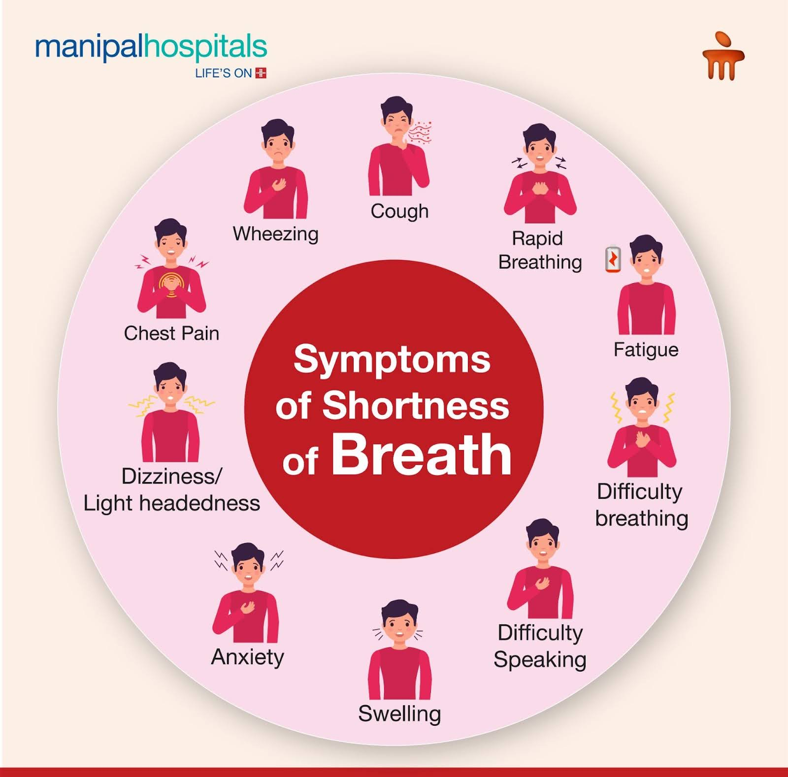
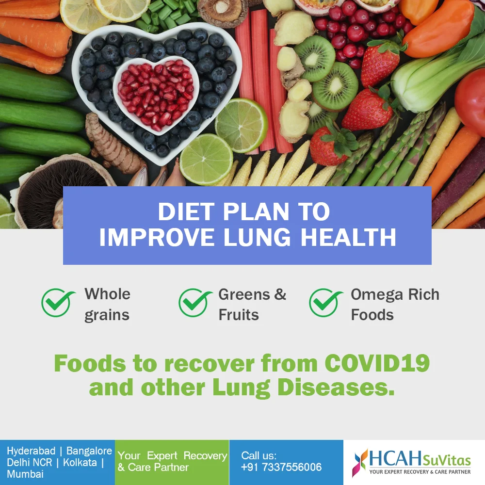

Air Pollution:Exposure to pollutants, vehicle exhaust, or industrial smoke can irritate the airways and worsen breathing difficulties,
especially for individuals with asthma or COPD.
Tobacco Smoke:Both active and passive smoking can severely irritate airways and exacerbate respiratory issues.
Allergens:Pollen, dust mites, pet dander, and mold can trigger asthma attacks and other allergic reactions that cause breathing problems.
Lifestyle Modifications
Quit smoking:Smoking is a major cause of lung diseases and can significantly worsen shortness of breath.
Avoid triggers: If you haveallergies or asthma, identify and avoid triggers like dust mites, mold, and pollen.
Maintain a healthy weight: Overweight individuals are more likely to experience shortness of breath, and losing weight can improve breathing.
Exercise regularly: Engage in activities like walking, cycling, or swimming to improve cardiovascular and respiratory fitness.
Relaxation Techniques:Stress and anxiety can trigger shortness of breath. Practicing relaxation techniques like deep breathing, meditation, or yoga can help manage stress and promote more efficient breathing.

Monitor Symptoms
Symptoms of Shortness of Breath:
Feeling of air hunger or needing more air: This is a primary sensation, often described as a tightening in the chest or a feeling of suffocation.
Difficulty breathing:This can manifest as labored breathing, rapid breathing (tachypnea), or breathing through a straw.
Chest tightness or pain
Rapid heart rate (palpitations)
Wheezing or stridor,Anxiety and panicky feelings.
DIET PLAN

Shortness of Breathe friendly Foods
Lean Proteins: Meat, fish, poultry, eggs, and plant-based protein sources like beans, lentils, and tofu are essential for maintaining strong respiratory muscles.
Whole Grains: Quinoa, rice, and whole wheat bread provide sustained energy and fiber.
Fruits and Vegetables: These are rich in vitamins, minerals, and antioxidants, which support overall health and may help reduce inflammation.
Healthy Fats: Avocados, nuts, seeds, olive oil, and fatty fish are beneficial for overall health and can help with energy and weight management.
Magnesium-Rich Foods: Magnesium can help relax bronchial airways. Good sources include leafy green vegetables, nuts, seeds, and dark chocolate.
Fiber-Rich Foods: Fiber helps with digestion and can prevent constipation, which can put pressure on the diaphragm and worsen shortness of breath.
Hydration: Aim for 6-8 glasses of water a day to keep mucus thin.
Antioxidant-rich foods:Berries (blueberries, strawberries), dark leafy greens (spinach, kale), and apples are good sources of antioxidants that can combat oxidative stress in the lungs and improve lung function.
Protein-rich foods:Include lean meat, fish, poultry, eggs, nuts, and legumes in your diet to support strong respiratory muscles.
Fiber-rich foods: Choose whole grains, fruits, and vegetables for a good source of fiber, which aids in digestion and overall health.
Anti-inflammatory foods: Ginger, garlic, and black turmeric are known for their anti-inflammatory properties, which can help reduce inflammation in the airways and improve breathing.
EXERCISES
Walking
Benefits:Walking is a low-impact, accessible exercise that can improve cardiovascular fitness, lung capacity, and overall stamina.
Tips: Start with shorter walks at a comfortable pace and gradually increase the duration and intensity as tolerated.
Breathing: Practice pursed-lip breathing (inhaling through the nose, exhaling slowly through pursed lips) during walks to improve airflow and reduce breathlessness.
Stretching
Benefits: Stretching improves flexibility, which can help with breathing by allowing for greater chest expansion and rib cage movement.
Tips: Focus on stretches that open the chest and shoulders, like the overhead chest stretch or arm raises.
Breathing: Incorporate deep, diaphragmatic breathing (breathing into the belly) during stretches.
Diaphragmatic Breathing,Overhead Chest Stretch
Other Helpful Techniques:Pursed-lip breathing,Buteyko Method, Brething exercises for stress.
Weight Training
Benefits: Weight training strengthens muscles, including the diaphragm and core, which are important for breathing and posture.
Tips: Use light weights and focus on proper form.
Breathing: Be mindful of breathing during weight training, exhaling during exertion and inhaling during the resting phase.